Configure
Before using the IBM Technology Zone (ITZ), a few additional configuration steps need to be performed.
Setup the remediation scenario
A compelling demonstration of IBM Cloud Security and Compliance Center (SCC) not only includes showing the results of a compliance scan, but also demonstrating how compliance failures can be remediated. In this demonstration guide, you will demonstrate how to remediate a failed compliance scan related to internet protocol (IP) address spoofing on a virtual server instance (VSI) running in an IBM Cloud Virtual Private Cloud (VPC). While IP address spoofing has legitimate business uses, it is also a potential vulnerability. Learn more about IP address spoofing here. SCC has a predefined control that checks to see if a VSI in a VPC has IP address spoofing enabled and flags those VSI's as non-compliant. This scenario was chosen as it is easy to turn enable and disable this setting on a VSI and VSI's in VPC are inexpensive resources which provision very quickly.
In the next steps:
-
provision a VSI instance with IP network spoofing enabled
-
create a SCC attachment that scans for VSIs with IP network spoofing enabled
-
run an initial scan
In the Client Demonstration section, you will show the client the compliance failure related to the VSI you created, remediate the issue, re-run the scan, and show the new, successful compliance results.
Provision a VSI with IP spoofing enabled
- Open a web browser to the IBM Cloud Portal.
When the page loads, authenticate with your IBM Cloud ID and password. The authentication process varies depending on the primary account that your ID is associated with and any multi-factor authentication or other security controls in place for the account.
- Click the account selection drop-down menu and select the 2305900 - ITZ - ADHOC03 account.

Note, if the browser window is narrow, you might see an account selection icon like this:  instead of the full account name.
instead of the full account name.
- Click the IBM Cloud Shell icon (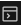)
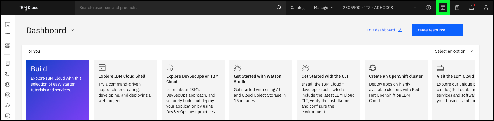
This will open a new browser window and tab with the IBM Cloud Shell. Proceed to the next step once the command prompt is ready (similar to the one highlighted below).
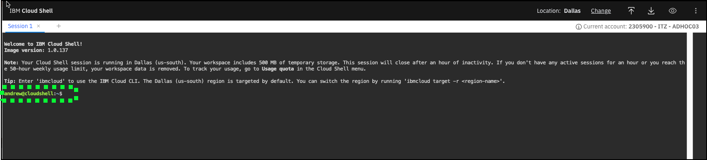
- Copy and paste () the following commands from this guide to the IBM Cloud Shell window and press enter.
The script calls the IBM Cloud command line interfaces to provision a VSI in a pre-provisioned VPC instance.
#
#
wget -O createVSI.bash https://raw.githubusercontent.com/IBM/SalesEnablement-SCC-L3/main/tools/createVSI.bash
chmod +x createVSI.bash
./createVSI.bash
Example output:
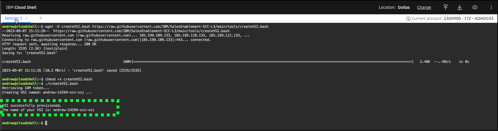
Take note of the name of the VSI just created (highlighted above). Your VSI name will be the first part of your IBM Cloud user ID (typically email address) followed by a random number and -scc-vsi. For example: andrew-14294-scc-vsi
Verify the VSI was created with IP spoofing enabled
Return to the IBM Cloud browser window/tab.
- Click the VPC Infrastructure icon (
 ) in the menu bar.
) in the menu bar.

- Click the Virtual server instances option in the left-hand menu.

- Click your VSI's name in the table.
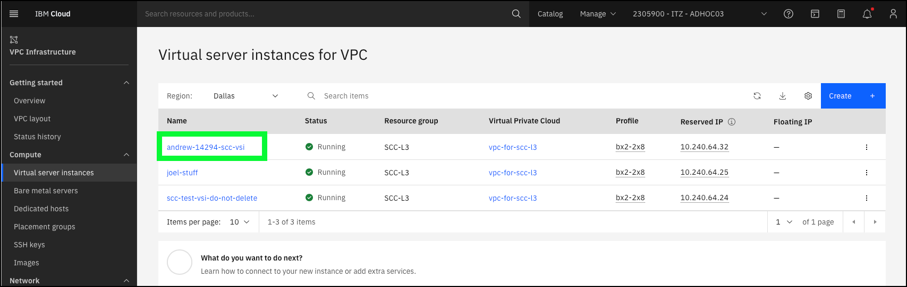
- Scroll down to the Network interfaces section and verify Allow IP spoofing is enabled.
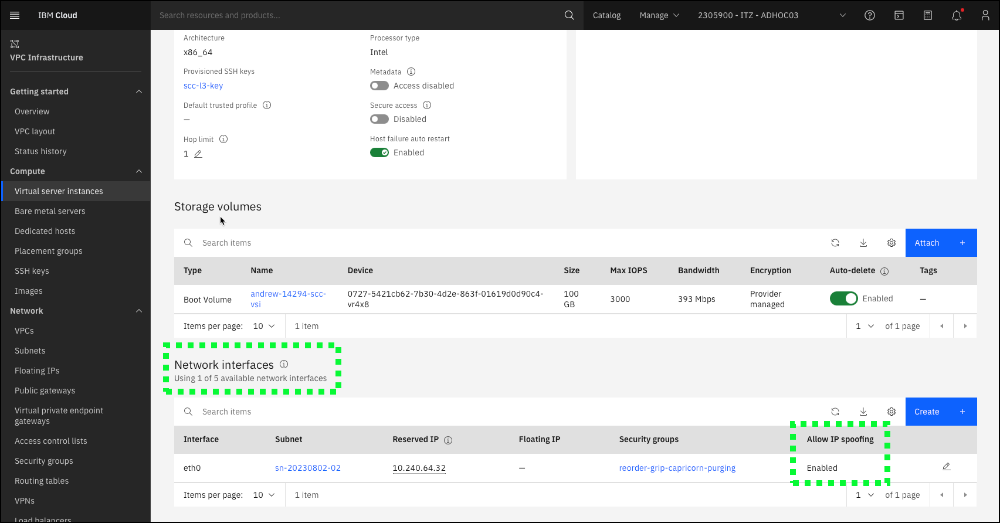
Create a SCC attachment and run an initial scan
In the steps that follow, using a pre-provisioned instance of SCC, you will create an attachment which will scan for VSI on VPCs in a single IBM Cloud resource group to see if IP network spoofing is enabled. When the attachment is saved, the first scan will automatically be performed.
Recall in the scenario described earlier, we will show the failed compliance check (IP spoofing is disabled for all VSIs in VPCs), remediate the issue, and then re-scan to show the compliance check is successful. It is important to understand that SCC cache's scan results for one hour. This means if you run the same scan within an hour of the last time the scan was run, a new scan is NOT performed and the old results are returned. This will be important to remember when performing a client demonstration or if you a recording your Stand and Deliver.
In the Client Demonstration section of this guide, you demonstrate how to view the scan results, remediate the issue, re-run the scan, and view the new results and the "drift" in compliance between the scans. Additional, commentary will be provided in that section of the guide. For now simply follow the next steps to create the attachment and have the first scan execute.
- Navigate to the SCC Dashboard page in the IBM Cloud portal.

- Click Attachments in the left-hand menu.
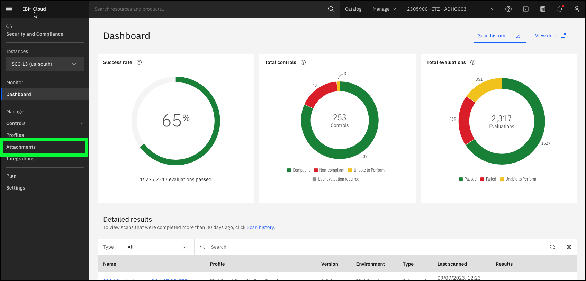
- Click Create +.
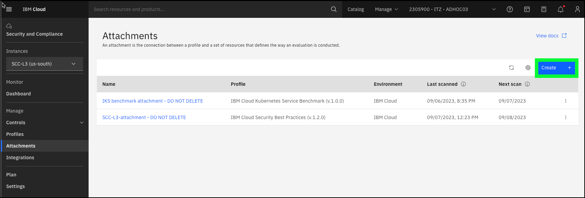
- Enter a unique Name for your attachment and then click Next.
Attachment names need to be unique. To avoid issues, it is suggested that you use a name similar to the VSI created earlier, for example: andrew-14294-ipspoofing-compliance.
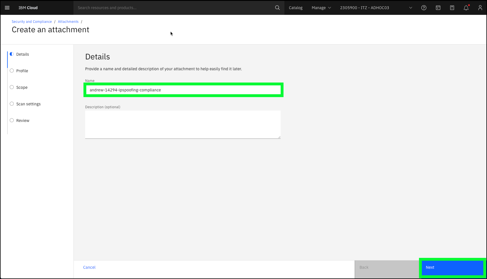
- Select se-scc-l3-DO-NOT-DELETE in the Profile pull-down menu and then click Next
You will examine the se-scc-l3-DO-NOT-DELETE profile in detail in the next section of the guide.
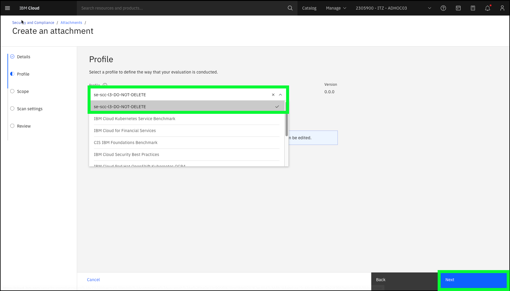
- Select SCC-L3 in the Scope pull-down menu and click Next.
You will learn more about the Scope setting in the next section of the guide.
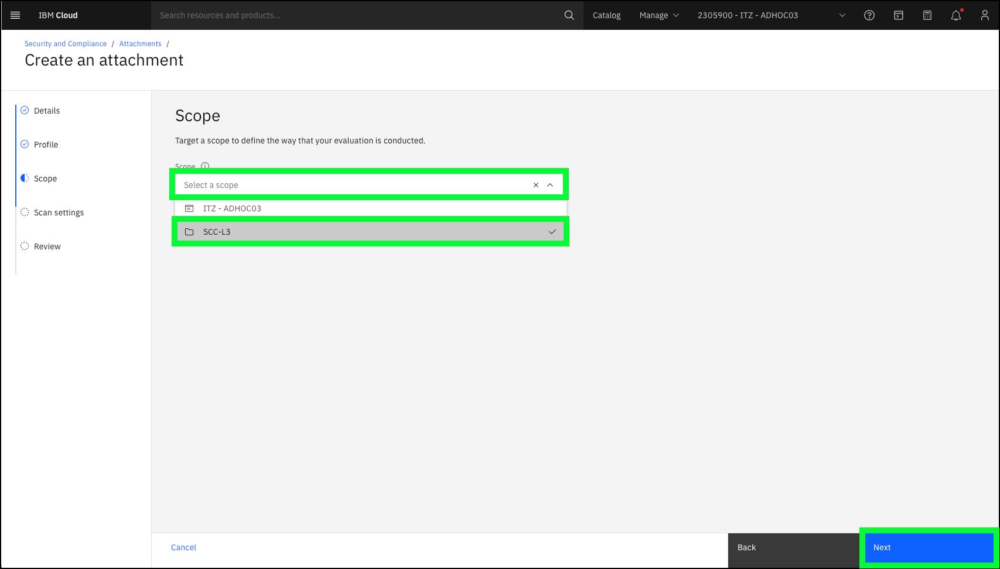
- Review the details on the Scan settings page and click Next.
For now, the default settings are fine, and will be explain in more details in the next section of the guide.
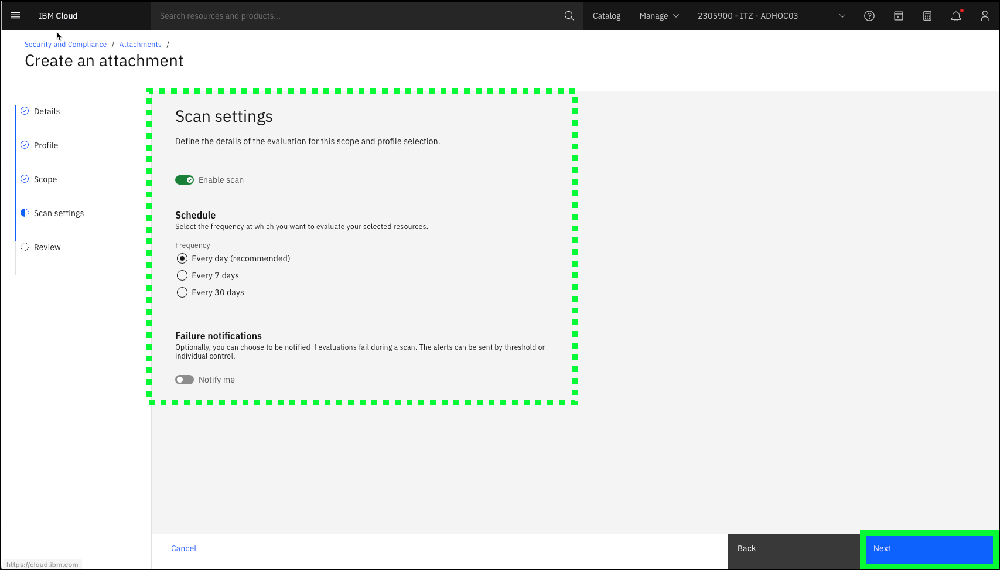
- Review all the attachment settings and click Create.
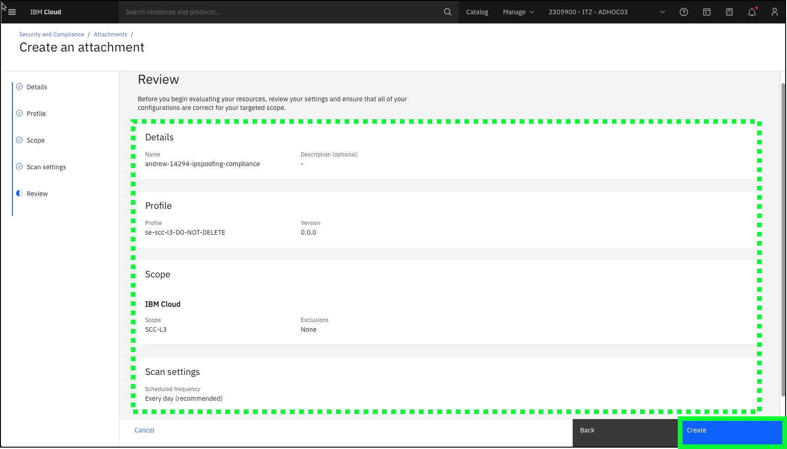
The attachment is now saved and the initial scan is being run.
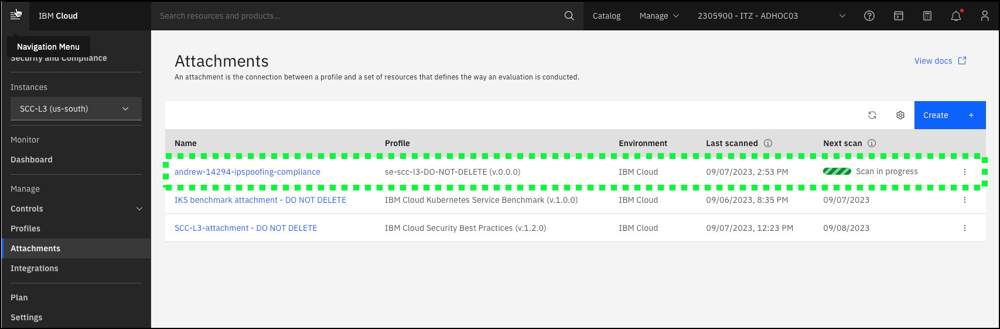
Notice the Scan in progress message for your attachment. Due to a user interface issue with this page and at least some browsers, this progress message will remain on the screen until you refresh the page. As this is a very simple scan of one control on a very limited scope, this scan only takes a minute or two to run. Wait a couple of minutes and then click the browser's refresh button and the Next scan information should be shown.
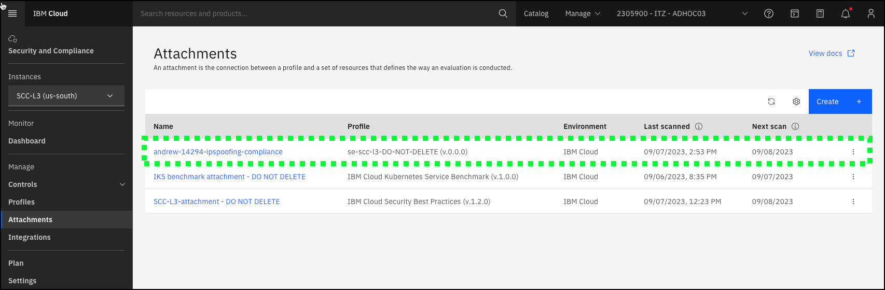
Enable SMS notifications (Optional)
This is an optional task for the Level 3 learning plan requirements.
SCC can integrate with IBM Cloud Event Notifications which is used to send notifications to users via e-mail, SMS, or other supported notification channels (recall the Notify me toggle in the Scan settings page of when creating an attachment). The ITZ environment for this demonstration guide is enabled with IBM Cloud Event Notifications. Step-by-step instructions for enabling SMS notifications to your personal mobile device are provided below. To learn about provisioning IBM Cloud Event Notifications and configuration SCC to use it, read the documentation here.
Follow these steps to add SMS notifications as part of your demonstration.
- Click the Settings option in the left-hand menu of the Security and Compliance page.

- Click the eventnotifications-scc-l3 link under Event Notifications.

Don't worry about the Missing authorization message in the Storage section. In this ITZ environment, your ID does not have permissions to view this information. Rest assured that the environment is properly configured.
A new browser window or tab will be opened.
- Click Subscriptions in left-hand menu.

- Click the three ellipses icon (
 ) for the SCC-l3-subscription entry in the table and then click Edit.
) for the SCC-l3-subscription entry in the table and then click Edit.

- Enter your SMS enabled mobile device number in the Phone numbers dialog, and then click the Add + button in the Recipients section of the Subscription details dialog.
The mobile device number you enter must be in the proper format. Numbers should being with + and country code. Use the Learn more link in the dialog if you are unsure of the proper format.

Do not change anything else on this page
The IAM permissions required to add mobile device numbers to a subscription also allow users to modify the subscription topic and name. Please do not change these values as this will negatively affect other IBM and Business Partner sellers using this demonstration environment.
- Click Save.

Shortly after saving the subscription, a SMS message should be received on your mobile device. You must click the link provided to continue to receive the SMS message notifications. You can unsubscribe at anytime.
- Click the verification link in the SMS message on your mobile device.

Note, the above image was taken from a Apple iPhone. It may look different on other mobile devices.
A new browser window or tab will open on your mobile device.
- Click Confirm.

- Upon receiving the Successfully Subscribed message, close the window on your mobile device.

- Return to the Event Notification's Subscriptions browser window and close it.
Note, at this point the scan you created is still not enabled to send notifications. You will update this setting in the next section of the guide.
You are now ready to proceed to the next section to learn how to perform a client demonstration.